The Oxyhemoglobin Dissociation Curve
These 16 key frames are rendered from the video's code at the moment each line of the approved voice-over (take A) plays. Nothing here is a mock-up: the final render animates between these exact frames.
New in v1.2: logo intro
These four frames are new. The opening now runs 2.1 seconds longer, so every frame below happens 2.1 s later than its label shows. Nothing else has changed.
(no narration)
The Medzcool logo from your SVG settles in at the centre in charcoal.
(no narration)
Both logo shapes morph point-for-point toward an ellipse while gliding to the red cell's spot in the capillary. The colour shifts from charcoal to deoxygenated red.
(no narration)
Near the end of the morph the logo has become the cell's outline, and the capillary and labels start to fade in.
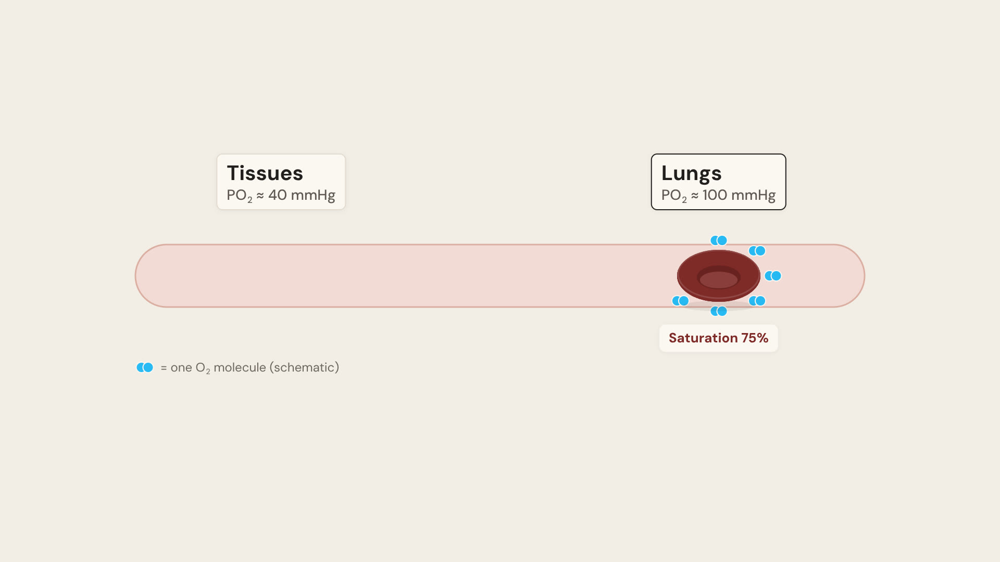
(no narration)
The finished red cell (with its central pallor) takes over, carrying O₂ at 75% saturation. The narration starts at 0:03.6, and the rest of the video is unchanged.
Approved v1.1 frames
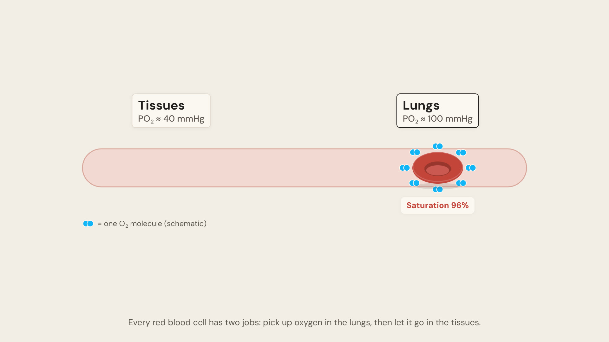
“Every red blood cell has two jobs. Pick up oxygen in the lungs…”
A red cell in a capillary loads O₂ (now highlighter blue) in the lungs. Saturation counts up from 75% to 97%, and the cell brightens from dark red to bright red.
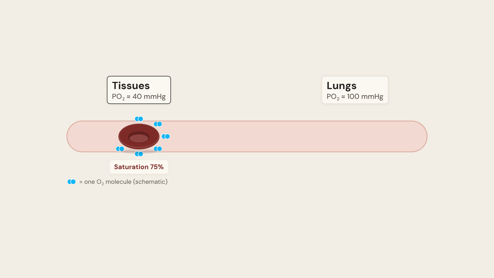
“…then let it go in the tissues.”
The cell travels to the tissues and releases two of its eight O₂ molecules. Saturation falls back to 75%.
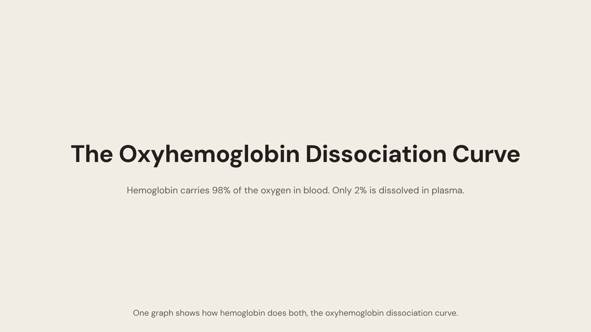
“One graph shows how hemoglobin does both. The oxyhemoglobin dissociation curve.”
The title types in, with the StatPearls fact that hemoglobin carries 98% of blood oxygen. The title then shrinks to the top-left header.
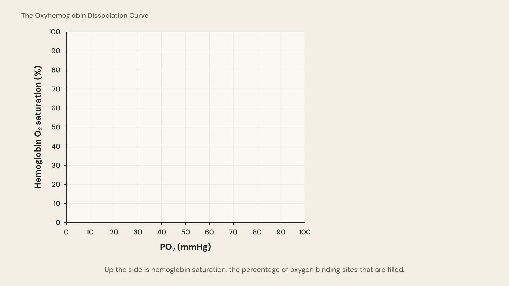
“Along the bottom is PO₂… Up the side is hemoglobin saturation…”
The x-axis draws first with its title, then the y-axis. Then the grid fades in.
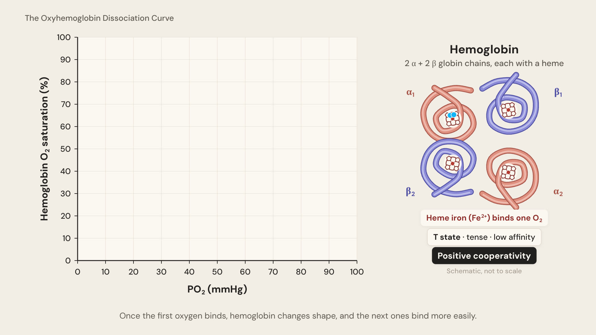
“Once the first oxygen binds, hemoglobin changes shape…”
New ribbon tetramer: α chains in red, β chains in purple-blue, each globin chain cradling a heme (porphyrin ring with Fe²⁺). The first O₂ docks on α₁ while hemoglobin is still in the T state.
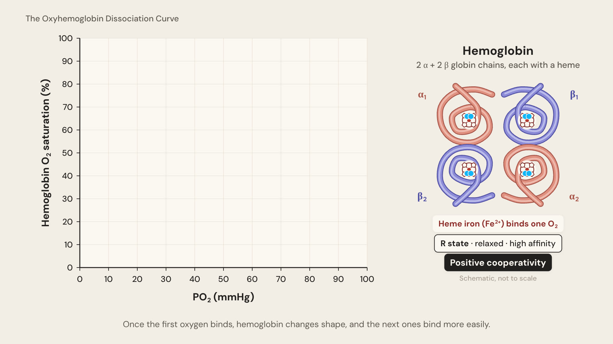
“…and the next ones bind more easily.”
The two αβ pairs rotate into the R state, and the other three O₂ bind quickly. Labels: T to R state, positive cooperativity.
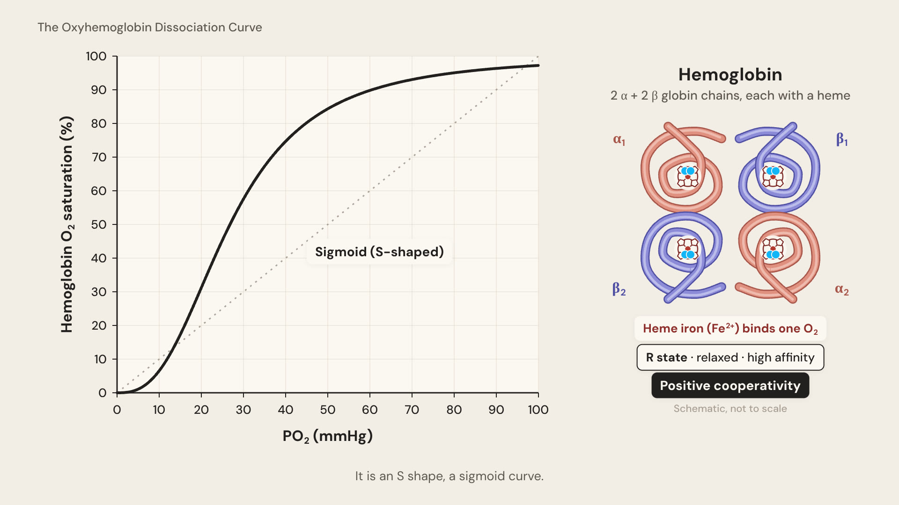
“It is an S shape. A sigmoid curve.”
A dashed straight line appears as a foil, then the Hill-equation curve draws on (n 2.7, P₅₀ 26.8).
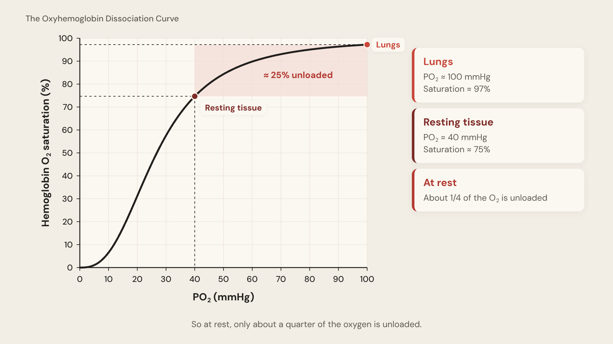
“So at rest, only about a quarter of the oxygen is unloaded.”
Lungs at 100 mmHg / 97% and resting tissue at 40 mmHg / 75%, with dashed guides to both axes. The band between them is labelled ≈ 25% unloaded.
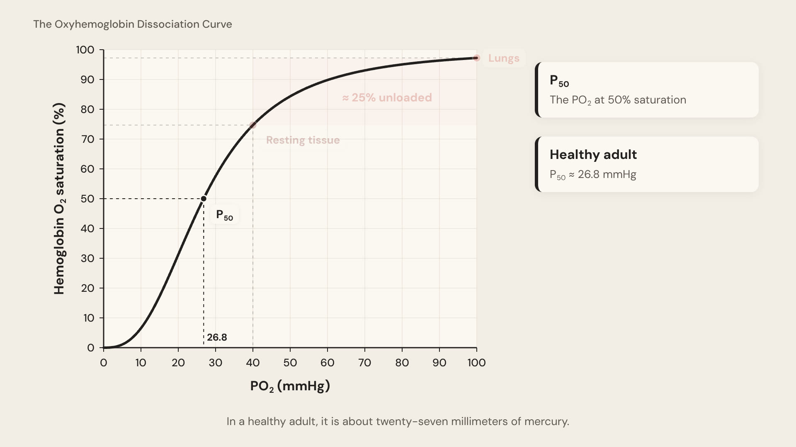
“In a healthy adult, it is about 27 millimeters of mercury.”
The 50% line runs across to the curve, then down to 26.8 on the x-axis.
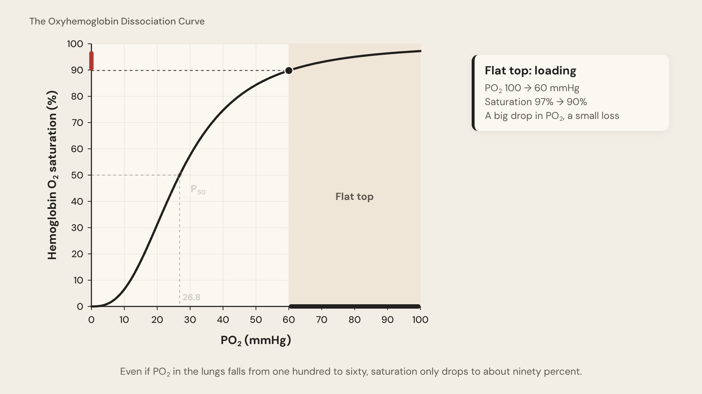
“Even if PO₂ falls from 100 to 60, saturation only drops to about 90%.”
A marker slides down the curve from 100 to 60. The bars on each axis show a large x change against a small y change, and the card numbers count live.
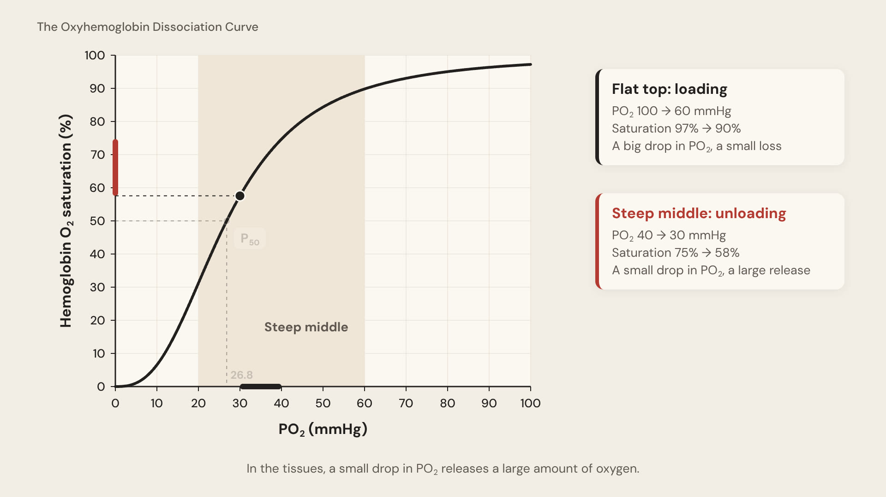
“In the tissues, a small drop in PO₂ releases a large amount of oxygen.”
The marker slides from 40 to 30 mmHg and saturation falls from 75% to 58%: a short x bar against a long y bar.
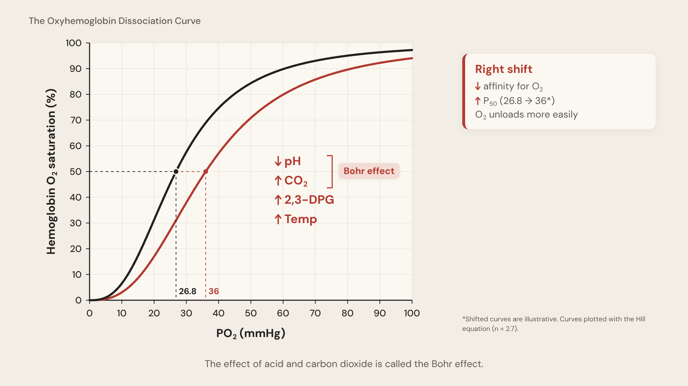
“The effect of acid and carbon dioxide is called the Bohr effect.”
The red curve springs right to P₅₀ 36. The four factors build one at a time in the lower right, as in your reference graph, and a bracket groups pH and CO₂ as the Bohr effect.
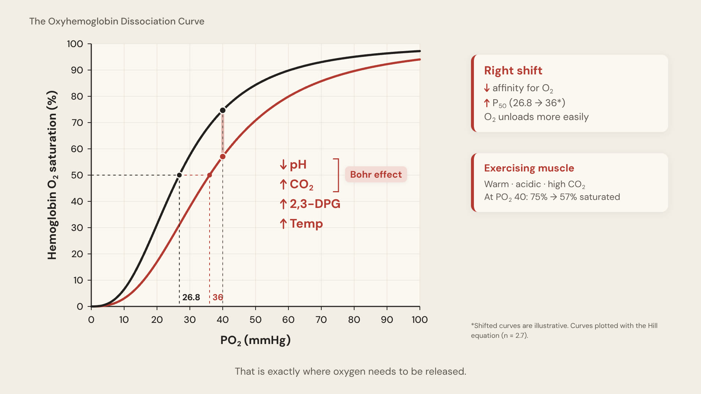
“That is exactly where oxygen needs to be released.”
At 40 mmHg, saturation is 75% on the normal curve and 57% on the right-shifted curve. The extra O₂ released is marked on the graph.
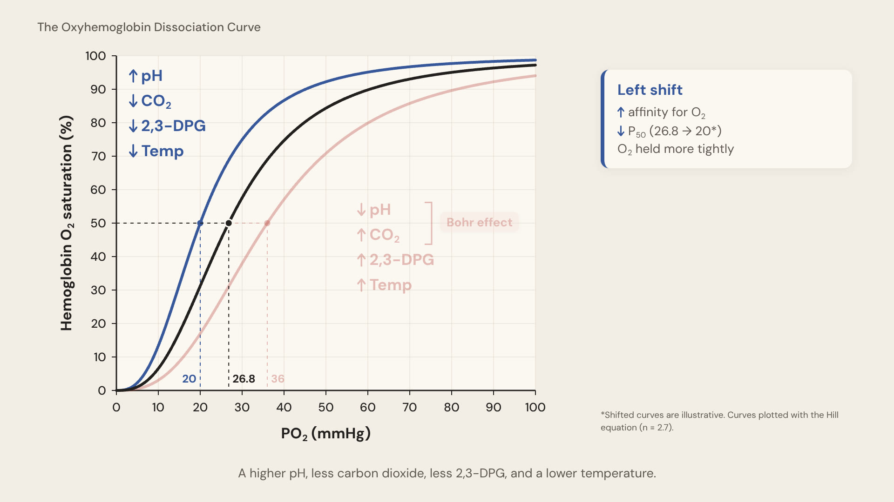
“A higher pH. Less carbon dioxide. Less 2,3-DPG. And a lower temperature.”
The red curve dims and the blue curve springs left to P₅₀ 20. Its factors build in the upper left, as in your reference graph.
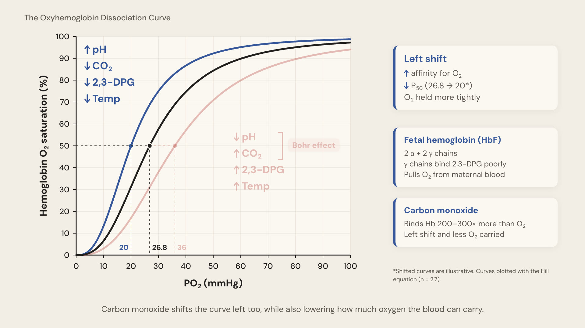
“Carbon monoxide shifts the curve left too…”
Cards for fetal hemoglobin (2α + 2γ chains) and carbon monoxide (binds 200–300× more than O₂), both from StatPearls.
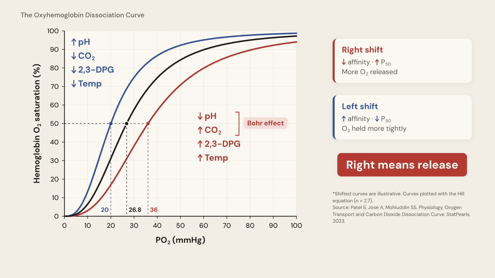
“An easy way to remember it: right means release.”
The final graph matches your reference: three curves, both factor lists, two summary cards and "Right means release". Source and Hill-equation footnote at the end.